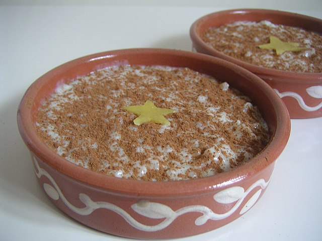

Arroz con Leche

Description
Arroz con Leche is a classic Spanish rice pudding made with short-grain rice and milk,
flavored with cinnamon and lemon peel.
A comforting and delightful dessert served warm or chilled.
Ingredients
- 1 cup short-grain rice
- 4 cups whole milk
- 1/2 cup sugar (adjust to taste)
- 1 lemon peel (optional)
- Ground cinnamon for garnish
Steps
- In a pot, combine the whole milk, lemon peel, the sugar
and the rice. Heat over medium heat until it reaches a simmer.
Stir occasionally to prevent sticking.
- Remove the cinnamon stick and lemon peel. Transfer the arroz con leche to serving dishes. Serve warm or chilled.
- Sprinkle ground cinnamon on top of each serving for extra flavor.